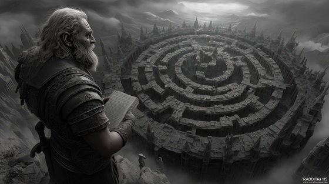

The great inventor Daedalus was ordered by King Minos to build a prison for the Minotaur — a structure so complex no one could enter or leave without being lost forever.
Thus, the Labyrinth was born: a twisting, endless maze of death, isolation, and despair.
"Daedalus and the Maze" captures the cold, mechanical soul of the Labyrinth itself — a masterpiece of cruelty disguised as art.
Daedalus and the Maze
Stone upon stone, breath by breath
I weave the snare, I weave the death
No gate, no sky, no voice, no plea—
A cage of mind, a grave of dreams
No thread of gold, no star shall guide—
The beast shall rot where walls divide
Daedalus crafts, Daedalus weaves
The endless maze no soul believes
Turn by turn, you lose your name—
The labyrinth drinks hope and flame
The king commands, the stones obey
The blood will howl, the lost shall stay
Through every wall, through every breath—
The maze shall whisper death to death
No prayer escapes, no god redeems—
The maze devours the loudest screams
Daedalus crafts, Daedalus weaves
The endless maze no soul believes
Turn by turn, you lose your name—
The labyrinth drinks hope and flame
The heart will break, the light will fail
The beast will reign behind the veil
Through twisted stone, through endless night—
I forge the grave beyond the light
Brick by brick, dream by scream
The maze shall haunt the soul's last dream
No dawn, no dusk, no straight, no bend—
The labyrinth knows no end
Daedalus crafts, Daedalus weaves
A graveyard stitched to broken dreams
No king, no beast shall stand or claim—
The labyrinth drinks blood and flame
Turn by turn, breath by breath—
The maze shall weave your endless death